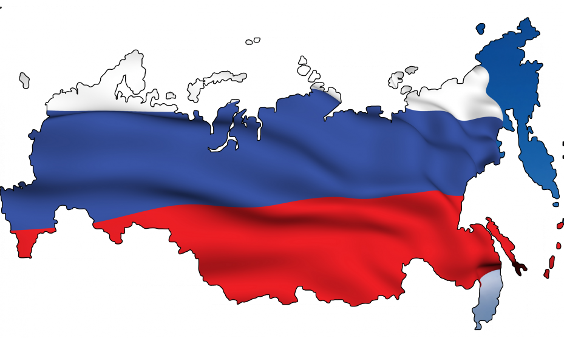

На данном интернет-ресурсе вы можете узнать о работе Государственной Думы 6 созыва.
Здесь вы найдете информацию о законопроектах, рассмотренных ГД, о работе каждой из фракций, а так же средние показания голосований каждого из депутатов.
На данном интернет-ресурсе вы можете узнать о работе Государственной Думы 6 созыва.
Здесь вы найдете информацию о законопроектах, рассмотренных ГД, о работе каждой из фракций, а так же средние показания голосований каждого из депутатов.

Над проектом работали студенты
Факультета ПМ-ПУ, СпбГУ
Осенний семестр 2016 года